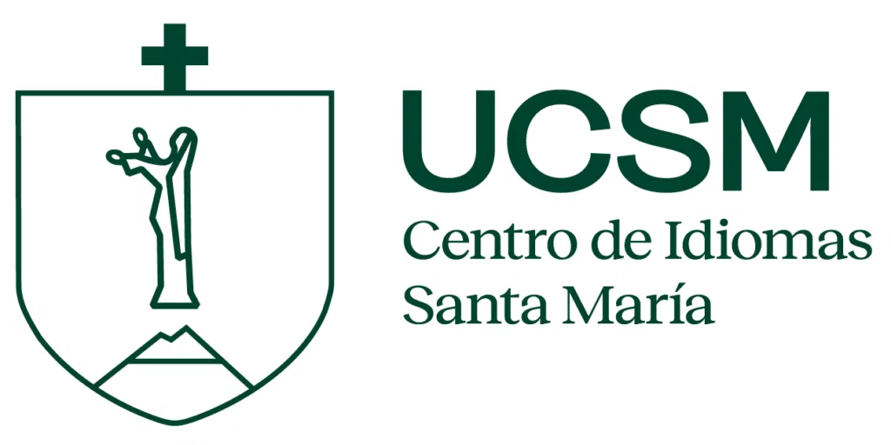
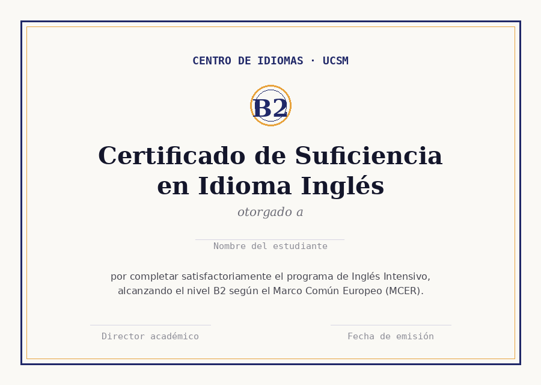

Programa intensivo que te lleva del nivel B1 al B2, con enfoque comunicativo, grupos reducidos y evaluación continua alineada al Marco Común Europeo de Referencia.

Inglés Intensivo B2 está diseñado para estudiantes y profesionales que ya manejan una base B1 y necesitan dar el salto hacia una comunicación fluida: sustentar ideas, participar en discusiones y redactar textos con mayor precisión.
Las sesiones combinan práctica oral guiada, retroalimentación individual y proyectos cortos que simulan situaciones reales de estudio y trabajo, en vez de depender únicamente de ejercicios de gramática aislados.
| Modalidad | Híbrida (presencial + plataforma virtual) |
|---|---|
| Duración total | 12 semanas · 96 horas académicas |
| Horas por semana | 8 horas, en 4 sesiones de 2 horas |
| Tamaño de grupo | Máximo 14 estudiantes |
| Nivel de ingreso | B1 acreditado o examen de ubicación |
| Nivel de salida | B2 según el MCER |
| Próximo inicio | 06 de octubre de 2026 |
| Inversión | S/ 480 por mes (3 cuotas) o S/ 1,320 al contado |

Al aprobar el programa con nota mínima 14, recibes un certificado oficial del Centro de Idiomas UCSM que acredita el nivel B2, válido para procesos de titulación, becas e intercambios académicos.
El certificado incluye tu puntaje por destreza (comprensión oral, comprensión lectora, expresión oral y escrita), útil como referencia si luego rindes un examen internacional.
Aparta tu cupo para la cohorte que inicia el 06 de octubre.